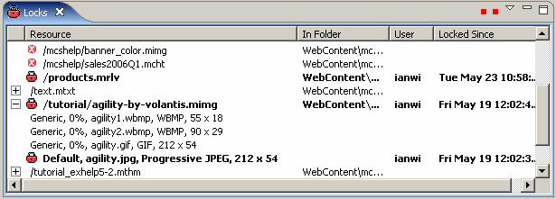

The Locks view shows you the current status of all the locks on policies and variants held by users in collaborative projects. The view displays:

You can change the width of columns, select rows and scroll the list, and expand policy names in the Resource column to display the related variants.
You can click the Menu button in the toolbar and choose between Filters and Refresh Options. Filters opens a dialog where you can toggle the view between policies on which you have a lock, and all locked policies. Refresh Options allows you to set the automatic refresh interval for the view. The Refresh button forces an update from the database.
Using the context menu you can acquire a Lock on an unlocked policy or variant, but you cannot Unlock a resource held by anyone else. Go To navigates you to the editor for a policy or variant directly.
Related topics
MCS views